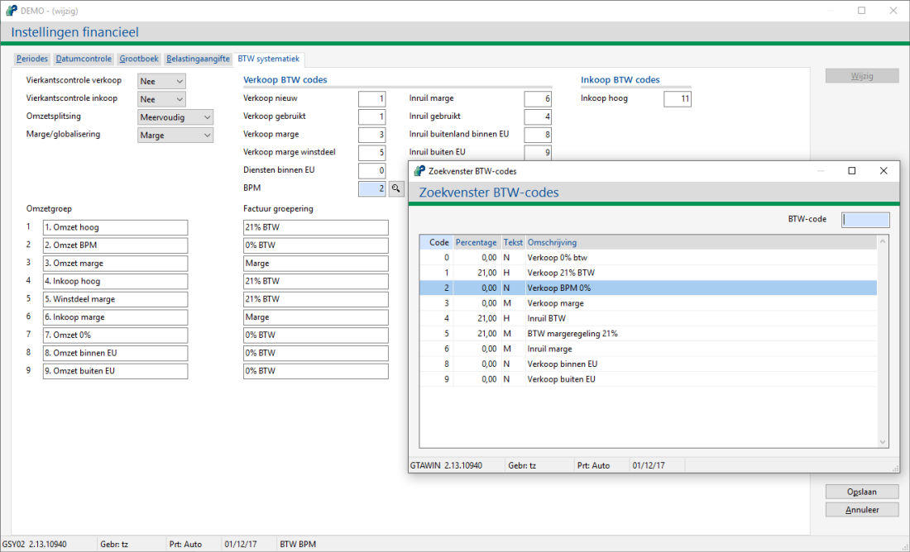
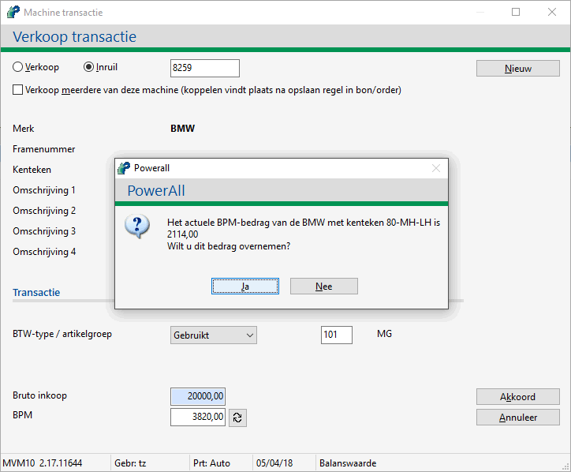

BPM is de Belasting van Personenauto’s en Motorrijwielen. Voor meer informatie zie BPM belastingdienst.
Bij Onderhoud artikelen worden twee BPM artikelen toegevoegd:
BPM Nieuw
BPM Gebruikt
Belangrijk: De BTW-code is 0 (geen BTW).
Artikelen zitten gekoppeld aan verschillende artikelgroepen, zodat de grootboekrekeningen separaat aangestuurd kunnen worden, deze artikelen hebben geen voorraad.
Bij Onderhoud artikelgroepen, tabblad Voorraad, moeten de grootboeknummers voor BPM ingevuld zijn. Deze moeten aanwezig zijn of éénmalig aangemaakt worden.
Bij Instellingen financieel, tabblad BTW systematiek, wordt voor BPM bijv. btw-code 2 gebruikt zie:

Bij Instellingen machines, tabblad Koppelingen en beheer, moet veld Gebruik BPM op ja staan.
| Gebruik BPM | Optie voor het gebruik van BPM (Belasting van Personenauto’s en Motorrijwielen): - Nee (standaard) - Ja, opgave of refresh BPM bedrag mogelijk. > vanaf versie 2.38 kan hierbij in FCR05 kosten op kostensoort BPM geboekt worden. • Bij een nieuwe machine kunnen gegevens van het RDW overgenomen worden. Opmerking: Bij Incl. kenteken * kan het kenteken zonder streepjes ingegeven worden, maar wordt 'opgemaakt' op scherm of afdruk met streepjes behalve bij buitenlandse kentekens. |
Bij Onderhoud machines, tabblad Financieel, kan de BPM opgegeven worden, als bovengenoemde instelling op ja staat.
Opmerking: De balanswaarde wordt inclusief BPM opgegeven.
Bij een verkoop van een machine kan de actuele BPM waarde berekend worden a.d.h.v. het kenteken met de RDW BPM check.
Kies voor de knop .
Kies voor de knop Ja.

Opmerking: Bij BTW-type Marge wordt er geen BPM gebruikt.
Het actuele BPM bedrag wordt overgenomen.
Copyright ©